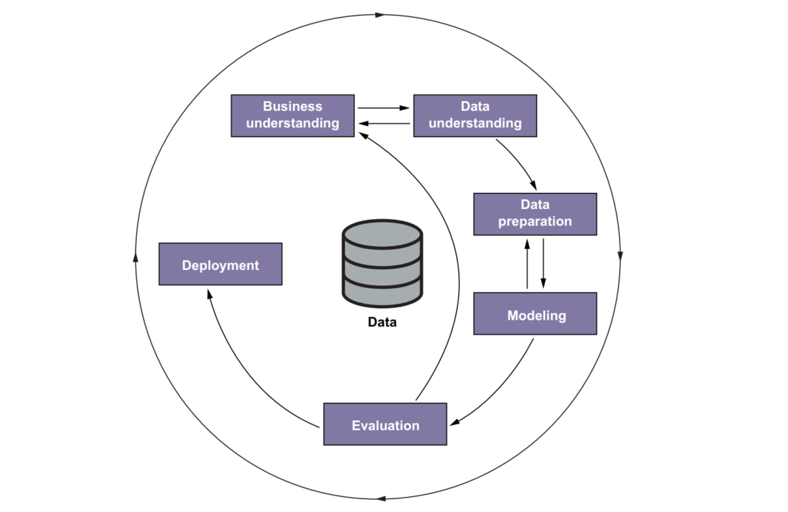
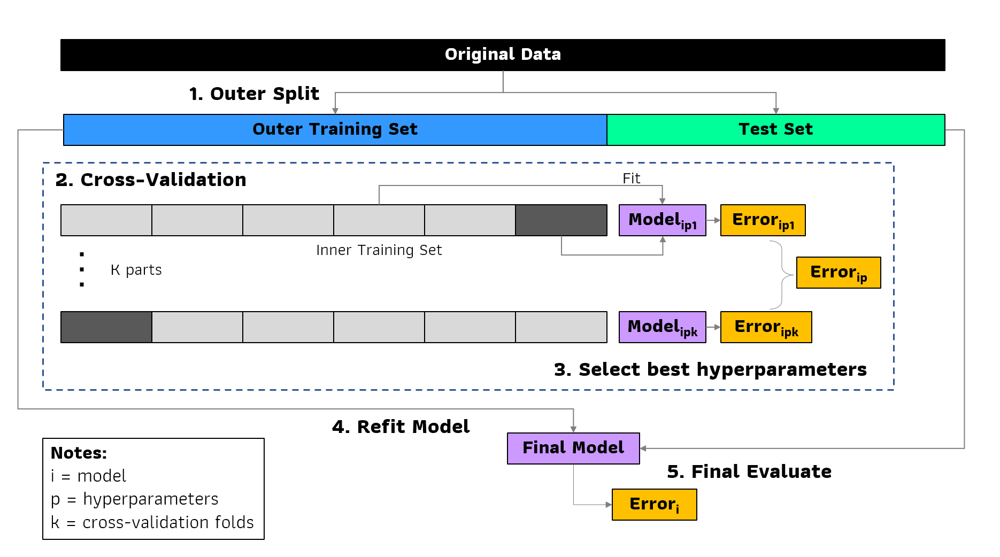

np.__version__'1.22.3'เพื่อให้เข้าใจว่า ML คืออะไร ขอใช้การอธิบายผ่านตัวอย่างการทำนายราคารถยนต์มือสอง
สมมติว่า เราต้องการขายรถยนต์ในตลาดมือสอง คำถาม คือ เราควรจะตั้งราคาขายที่เท่าไหร่ หากตั้งราคาสูงเกินไปก็จะขายไม่ได้ แต่ถ้าตั้งราคาต่ำเกินไปก็จะได้เงินน้อย แล้วราคาที่เหมาะสมคือเท่าไหร่
เราสามารถใช้ข้อมูลการซื้อขายรถยนต์ในอดีต ข้อมูลรถและราคาขาย เพื่อค้นหา pattern ซึ่งสามารถใช้ในการทำนายราคาได้ - ข้อมูลของรถยนต์ เช่น ผู้ผลิต เลขไมล์ ปี จำนวนประตู เป็นต้น มีชื่อเรียกว่า features หรือ independent variables - ข้อมูลราคา คือ ข้อมูลที่ต้องการทำนาย มีชื่อเรียกว่า target หรือ dependent variable
ข้อมูลในอดีตจะถูกใช้ในการสร้างแบบจำลอง ML (train) เมื่อได้แบบจำลองแล้ว เราสามารถใช้ในการทำนายกับข้อมูลใหม่ได้
สมมติว่า เราต้องการดัก spam email
สรุป:
Supervised Learning การเรียนรู้แบบมีผู้สอน คือ รูปแบบหนึ่งของ ML ที่ใช้งานมากที่สุด โดยตอน train ต้องมีข้อมูลที่ใช้ในการทำนาย (feature) และข้อมูลที่เราต้องการทำนาย (target) ด้วย เพื่อให้แบบจำลองค้นหา pattern หมายเหตุ รูปแบบ ML อื่น เช่น Unsupervised Learning, Reinforcement Learning ไม่ได้รวมใน course นี้
ML model แทนด้วยสัญลักษณ์ g(X) -> y โดย function g คือ model ที่เมื่อใส่ตัวแปร X แล้วจะให้ผลทำนาย y กระบวนการหา function g เรียกว่า model trainging
สรุป: Supervised Learning คือ การสอนเครื่องโดยใช้ตัวอย่าง ป้อนข้อมูล feature matrix ที่ใช้ทำนาย และผลจริง target เพื่อให้เครื่องหาความสัมพันธ์ หรือ function ที่สามารถทำนายได้ใกล้เคียงค่าจริงมากที่สุด
เราสามารถประยุกต์ใช้แนวคิด CRISP-DM (CRoss Industry Standard Process for Data Mining) โดย CRISP-DM คือ วิธีปฏิบัติในการจัดการโครงการที่เกี่ยวกับ Data Mining ซึ่งสามารถนำมาใช้กับโครงการ ML ได้ ครอบคลุมตั้งแต่ขั้นตอนทำความเข้าใจและตั้งโจทย์ (understanding) จนถึง นำไปใช้งานจริง (deployment) มีขั้นตอนดังนี้

Business understanding:
Data understanding:
ทำความเข้าใจข้อมูลที่ต้องการใช้ทำ ML มีข้อมูลแล้วหรือไม่ ถ้าไม่มีต้องเก็บเพิ่มอย่างไร นอกจากนี้การวิเคราะห์ข้อมูลเบื้องต้นอาจจะทำให้เข้าใจปัญหามากขึ้น และสามารถปรับโจทย์หากจำเป็น
จัดเตรียมข้อมูล ทำความสะอาดข้อมูล ทำ data pipeline สกัดตัวแปรจากข้อมูล (Feature Engineering) โดยส่วนใหญ่ มีการแปลงข้อมูลในรูปแบบตาราง เพื่อใส่ในแบบจำลอง ML
Modeling:
Evaluation:
ประเมินความแม่นยำแบบจำลอง แบบจำลองสามารถแก้ไขปัญหาได้หรือไม่ เพือตัดสินใจว่าควรต้องปรับโจทย์ใหม่ หรือ สามารถนำไปใช้จริงได้ หรือ ยกเลิก
นำ ML ไปใช้งานจริง (production) โดยใช้วิธีปฏิบัติที่ดีของ software engineer มีการติดตาม (monitoring) และสามารถบริหารจัดการ/แก้ไขได้ง่าย
Note:
ในการทำ ML เราจะพิจารณาแบบจำลองมีหลายแบบจำลอง เช่น linear regression, xgboost, Neural Network เป็นต้น
แต่ละแบบจำลองมี hyperparameter ที่สามารถปรับได้ เช่น max_depth และอื่นๆ
แล้วจะเลือกแบบจำลองที่เหมาะสมที่สุดอย่างไร
นอกจากนี้แบบจำลอง ML หลายแบบจำลอง จะสามารถเลียนแบบข้อมูลได้ดี แต่อาจไม่สามารถทำนายข้อมูลที่ไม่เคยเห็นมาก่อนได้ ปัญหานี้รู้จักกันในชื่อว่า Overfitting

วิธีการป้องกัน คือ การแยกข้อมูลเอาไว้สำหรับการทดสอบประสิทธิภาพ แต่เนื่องจากเราต้องเลือก hyperparameter ด้วย ดังนั้นจึงต้องมีการแบ่งข้อมูลออกเป็น training, validation และ test set
วิธีปฏิบัติในการเลือกแบบจำลอง สามารถสรุปดังนี้

# ตรวจสอบว่า python พร้อมใช้งาน
where pythonconda create -n ml-zoomcamp python=3.9pip install jupyterlabconda activate ml-zoomcamppip install numpy pandas scikit-learn seaborn openpyxl ipython ipykernelipython kernel install --name "ml-zoomcamp" --userconda deactivatejupyter labUseful links:
Other links:
import numpy as npnp.__version__'1.22.3'array หมายถึง ข้อมูลมารวมกันเป็นชุด มีทั้งแบบมิติเดียวและหลายมิติ เช่น array ข้อมูล 0 จำนวน 10 ค่า เป็นต้น ทั้งนี้ ข้อมูลใน array มีเงื่อนไขว่าต้องเป็นข้อมูลประเภทเดียวกัน เช่น ตัวเลข วันที่ หรือ ข้อความ
การสร้าง array สามารถทำได้หลายวิธี ดังนี้
# array ของเลข 0
np.zeros(10)array([0., 0., 0., 0., 0., 0., 0., 0., 0., 0.])# array ของเลข 1
np.ones(10)array([1., 1., 1., 1., 1., 1., 1., 1., 1., 1.])# array ของเลขที่กำหนดเอง ตั้งชื่อเป็นตัวแปร a
a = np.array([1, 2, 3, 5, 7, 12])
aarray([ 1, 2, 3, 5, 7, 12])สามารถเรียกดูสมาชิกใน array ได้ โดย a[x] โดย x คือ index ที่ต้องการ python สมาชิกตัวแรก เริ่มด้วยเลข 0
# สมาชิกตัวที่ 3
a[2]3สามารถแก้ไขค่าได้ด้วยการใช้ เครื่องหมาย =
a[2] = 10
aarray([ 1, 2, 10, 5, 7, 12])# np.arrage สร้าง series จำนวนเต็ม
np.arange(3, 10)array([3, 4, 5, 6, 7, 8, 9])# np.linspace สร้าง series ที่แบ่งออกเป็นช่วงที่มีความกว้างเท่าๆ กัน
np.linspace(0, 100, 11)array([ 0., 10., 20., 30., 40., 50., 60., 70., 80., 90., 100.])np.zeros((5, 2))array([[0., 0.],
[0., 0.],
[0., 0.],
[0., 0.],
[0., 0.]])n = np.array([
[1, 2, 3],
[4, 5, 6],
[7, 8, 9]
])
narray([[1, 2, 3],
[4, 5, 6],
[7, 8, 9]])# change by element
n[0, 1] = 20
narray([[ 1, 20, 3],
[ 4, 5, 6],
[ 7, 8, 9]])# change by row
n[2] = [1, 1, 1]
narray([[ 1, 20, 3],
[ 4, 5, 6],
[ 1, 1, 1]])# change by column
n[:, 2] = [0, 1, 2]
narray([[ 1, 20, 0],
[ 4, 5, 1],
[ 7, 8, 2]])np.random.seed(2)
100 * np.random.rand(5, 2) # uniform distributionarray([[43.59949021, 2.59262318],
[54.96624779, 43.53223926],
[42.03678021, 33.0334821 ],
[20.4648634 , 61.92709664],
[29.96546737, 26.68272751]])np.random.seed(2)
np.random.randn(5, 2) # normal distributionarray([[-0.41675785, -0.05626683],
[-2.1361961 , 1.64027081],
[-1.79343559, -0.84174737],
[ 0.50288142, -1.24528809],
[-1.05795222, -0.90900761]])np.random.seed(2)
np.random.randint(low=0, high=100, size=(5, 2)) # integerarray([[40, 15],
[72, 22],
[43, 82],
[75, 7],
[34, 49]])a = np.arange(5)
aarray([0, 1, 2, 3, 4])b = (10 + (a * 2)) ** 2 / 100
barray([1. , 1.44, 1.96, 2.56, 3.24])a / b +10array([10. , 10.69444444, 11.02040816, 11.171875 , 11.2345679 ])aarray([0, 1, 2, 3, 4])a >= 2array([False, False, True, True, True])barray([1. , 1.44, 1.96, 2.56, 3.24])a > barray([False, False, True, True, True])a[a > b] # maskingarray([2, 3, 4])aarray([0, 1, 2, 3, 4])a.mean()2.0a.std()1.4142135623730951u = np.array([2, 4, 5, 6])u * 2array([ 4, 8, 10, 12])v = np.array([1, 0, 0, 2])u + varray([3, 4, 5, 8])u * varray([ 2, 0, 0, 12])import numpy as npu.dot(v)14U = np.array([
[2, 4, 5, 6],
[1, 2, 1, 2],
[3, 1, 2, 1],
])
(U.shape, v.shape)((3, 4), (4,))U.dot(v)array([14, 5, 5])V = np.array([
[1, 1, 2],
[0, 0.5, 1],
[0, 2, 1],
[2, 1, 0],
])
(U.shape, V.shape)((3, 4), (4, 3))U.dot(V)array([[14. , 20. , 13. ],
[ 5. , 6. , 5. ],
[ 5. , 8.5, 9. ]])I = np.eye(3)
Iarray([[1., 0., 0.],
[0., 1., 0.],
[0., 0., 1.]])V.dot(I)array([[1. , 1. , 2. ],
[0. , 0.5, 1. ],
[0. , 2. , 1. ],
[2. , 1. , 0. ]])Vs = V[[0, 1, 2]]
Vsarray([[1. , 1. , 2. ],
[0. , 0.5, 1. ],
[0. , 2. , 1. ]])Vs_inv = np.linalg.inv(Vs)
Vs_invarray([[ 1. , -2. , 0. ],
[ 0. , -0.66666667, 0.66666667],
[ 0. , 1.33333333, -0.33333333]])Vs.dot(Vs_inv)array([[1., 0., 0.],
[0., 1., 0.],
[0., 0., 1.]])pandas เป็น python library ที่ทำงานกับข้อมูล
import pandas as pd
import numpy as npData frame คือ ข้อมูลที่อยู่ในรูปแบบตาราง 2 มิติ
data = [
['Nissan', 'Stanza', 1991, 138, 4, 'MANUAL', 'sedan', 2000],
['Hyundai', 'Sonata', 2017, None, 4, 'AUTOMATIC', 'Sedan', 27150],
['Lotus', 'Elise', 2010, 218, 4, 'MANUAL', 'convertible', 54990],
['GMC', 'Acadia', 2017, 194, 4, 'AUTOMATIC', '4dr SUV', 34450],
['Nissan', 'Frontier', 2017, 261, 6, 'MANUAL', 'Pickup', 32340],
]
columns = [
'Make', 'Model', 'Year', 'Engine HP', 'Engine Cylinders',
'Transmission Type', 'Vehicle_Style', 'MSRP'
]
# สร้าง dataframe
df = pd.DataFrame(data, columns=columns)
df| Make | Model | Year | Engine HP | Engine Cylinders | Transmission Type | Vehicle_Style | MSRP | |
|---|---|---|---|---|---|---|---|---|
| 0 | Nissan | Stanza | 1991 | 138.0 | 4 | MANUAL | sedan | 2000 |
| 1 | Hyundai | Sonata | 2017 | NaN | 4 | AUTOMATIC | Sedan | 27150 |
| 2 | Lotus | Elise | 2010 | 218.0 | 4 | MANUAL | convertible | 54990 |
| 3 | GMC | Acadia | 2017 | 194.0 | 4 | AUTOMATIC | 4dr SUV | 34450 |
| 4 | Nissan | Frontier | 2017 | 261.0 | 6 | MANUAL | Pickup | 32340 |
# การเรียกดูเฉพาะบางแถว
df.head(n=2) # 2 แถวแรก| Make | Model | Year | Engine HP | Engine Cylinders | Transmission Type | Vehicle_Style | MSRP | |
|---|---|---|---|---|---|---|---|---|
| 0 | Nissan | Stanza | 1991 | 138.0 | 4 | MANUAL | sedan | 2000 |
| 1 | Hyundai | Sonata | 2017 | NaN | 4 | AUTOMATIC | Sedan | 27150 |
df.tail(n=2) # 2 แถวสุดท้าย| Make | Model | Year | Engine HP | Engine Cylinders | Transmission Type | Vehicle_Style | MSRP | |
|---|---|---|---|---|---|---|---|---|
| 3 | GMC | Acadia | 2017 | 194.0 | 4 | AUTOMATIC | 4dr SUV | 34450 |
| 4 | Nissan | Frontier | 2017 | 261.0 | 6 | MANUAL | Pickup | 32340 |
Series คือ ข้อมูลที่อยู่ในมิติเดียว เหมือนกับ array แต่จะมี metadata อื่นประกอบ เช่น ชื่อของ Series เป็นต้น
Data Frame จริงๆ คือ การเอา Series มารวมกัน โดย Series คือ ข้อมูลในแต่ละ column
เราสามารถเรียกดู หรือ เลือกเฉพาะบาง column จาก Data Frame ได้
df.Make # subset ด้วย attribute0 Nissan
1 Hyundai
2 Lotus
3 GMC
4 Nissan
Name: Make, dtype: objectdf["Make"] # subset ด้วย []0 Nissan
1 Hyundai
2 Lotus
3 GMC
4 Nissan
Name: Make, dtype: objectdf['Engine HP'] # ชื่อ column มี ช่องว่าง0 138.0
1 NaN
2 218.0
3 194.0
4 261.0
Name: Engine HP, dtype: float64col_name = 'Engine HP'
df[col_name]0 138.0
1 NaN
2 218.0
3 194.0
4 261.0
Name: Engine HP, dtype: float64df[['Make', 'Model', 'MSRP']] # เลือกหลายคอลัมน์| Make | Model | MSRP | |
|---|---|---|---|
| 0 | Nissan | Stanza | 2000 |
| 1 | Hyundai | Sonata | 27150 |
| 2 | Lotus | Elise | 54990 |
| 3 | GMC | Acadia | 34450 |
| 4 | Nissan | Frontier | 32340 |
# สร้าง column ใหม่
df['id'] = ['nis1', 'hyu1', 'lot2', 'gmc1', 'nis2']
df| Make | Model | Year | Engine HP | Engine Cylinders | Transmission Type | Vehicle_Style | MSRP | id | |
|---|---|---|---|---|---|---|---|---|---|
| 0 | Nissan | Stanza | 1991 | 138.0 | 4 | MANUAL | sedan | 2000 | nis1 |
| 1 | Hyundai | Sonata | 2017 | NaN | 4 | AUTOMATIC | Sedan | 27150 | hyu1 |
| 2 | Lotus | Elise | 2010 | 218.0 | 4 | MANUAL | convertible | 54990 | lot2 |
| 3 | GMC | Acadia | 2017 | 194.0 | 4 | AUTOMATIC | 4dr SUV | 34450 | gmc1 |
| 4 | Nissan | Frontier | 2017 | 261.0 | 6 | MANUAL | Pickup | 32340 | nis2 |
# ลบ column
df.drop("id", axis = 1)| Make | Model | Year | Engine HP | Engine Cylinders | Transmission Type | Vehicle_Style | MSRP | |
|---|---|---|---|---|---|---|---|---|
| 0 | Nissan | Stanza | 1991 | 138.0 | 4 | MANUAL | sedan | 2000 |
| 1 | Hyundai | Sonata | 2017 | NaN | 4 | AUTOMATIC | Sedan | 27150 |
| 2 | Lotus | Elise | 2010 | 218.0 | 4 | MANUAL | convertible | 54990 |
| 3 | GMC | Acadia | 2017 | 194.0 | 4 | AUTOMATIC | 4dr SUV | 34450 |
| 4 | Nissan | Frontier | 2017 | 261.0 | 6 | MANUAL | Pickup | 32340 |
Index หรือ ดัชนี ใช้ในการเรียงลำดับของข้อมูล โดย attribute
df.indexRangeIndex(start=0, stop=5, step=1)df.Make.indexRangeIndex(start=0, stop=5, step=1)df.columnsIndex(['Make', 'Model', 'Year', 'Engine HP', 'Engine Cylinders',
'Transmission Type', 'Vehicle_Style', 'MSRP', 'id'],
dtype='object')สามารถเลือกข้อมูลโดยใช้ index ด้วย method iloc และ loc โดยใช้ syntax
# ใช้ index number
df.iloc[<row index> , <column index>]
# ใช้ index name
df.loc[<row name>, <column name>]df.iloc[0]Make Nissan
Model Stanza
Year 1991
Engine HP 138.0
Engine Cylinders 4
Transmission Type MANUAL
Vehicle_Style sedan
MSRP 2000
id nis1
Name: 0, dtype: objectdf.iloc[[2, 3, 0]]| Make | Model | Year | Engine HP | Engine Cylinders | Transmission Type | Vehicle_Style | MSRP | id | |
|---|---|---|---|---|---|---|---|---|---|
| 2 | Lotus | Elise | 2010 | 218.0 | 4 | MANUAL | convertible | 54990 | lot2 |
| 3 | GMC | Acadia | 2017 | 194.0 | 4 | AUTOMATIC | 4dr SUV | 34450 | gmc1 |
| 0 | Nissan | Stanza | 1991 | 138.0 | 4 | MANUAL | sedan | 2000 | nis1 |
df.iloc[[0, 1, 2, 3], [0, 1, 2]]| Make | Model | Year | |
|---|---|---|---|
| 0 | Nissan | Stanza | 1991 |
| 1 | Hyundai | Sonata | 2017 |
| 2 | Lotus | Elise | 2010 |
| 3 | GMC | Acadia | 2017 |
df.loc[0:3, ["Make", "Model", "Year"]]| Make | Model | Year | |
|---|---|---|---|
| 0 | Nissan | Stanza | 1991 |
| 1 | Hyundai | Sonata | 2017 |
| 2 | Lotus | Elise | 2010 |
| 3 | GMC | Acadia | 2017 |
เป็นการเลือกข้อมูลกำหนดเงื่อนไข
df[df['Make'] == 'Nissan']| Make | Model | Year | Engine HP | Engine Cylinders | Transmission Type | Vehicle_Style | MSRP | id | |
|---|---|---|---|---|---|---|---|---|---|
| 0 | Nissan | Stanza | 1991 | 138.0 | 4 | MANUAL | sedan | 2000 | nis1 |
| 4 | Nissan | Frontier | 2017 | 261.0 | 6 | MANUAL | Pickup | 32340 | nis2 |
df[(df['Year'] > 2010) & (df['Transmission Type'] == 'AUTOMATIC')]| Make | Model | Year | Engine HP | Engine Cylinders | Transmission Type | Vehicle_Style | MSRP | id | |
|---|---|---|---|---|---|---|---|---|---|
| 1 | Hyundai | Sonata | 2017 | NaN | 4 | AUTOMATIC | Sedan | 27150 | hyu1 |
| 3 | GMC | Acadia | 2017 | 194.0 | 4 | AUTOMATIC | 4dr SUV | 34450 | gmc1 |
df.query("Year > 2010 & `Transmission Type` == 'AUTOMATIC'")| Make | Model | Year | Engine HP | Engine Cylinders | Transmission Type | Vehicle_Style | MSRP | id | |
|---|---|---|---|---|---|---|---|---|---|
| 1 | Hyundai | Sonata | 2017 | NaN | 4 | AUTOMATIC | Sedan | 27150 | hyu1 |
| 3 | GMC | Acadia | 2017 | 194.0 | 4 | AUTOMATIC | 4dr SUV | 34450 | gmc1 |
การจัดข้อมูลข้อความ โดนมี method .str.XXX ในการจัดการ เช่น
# series ข้อมูลข้อความ
df['Vehicle_Style']0 sedan
1 Sedan
2 convertible
3 4dr SUV
4 Pickup
Name: Vehicle_Style, dtype: object# แปลงเป็นตัวเล็ก
df['Vehicle_Style'].str.lower()0 sedan
1 sedan
2 convertible
3 4dr suv
4 pickup
Name: Vehicle_Style, dtype: object# แทนค่าช่องว่าง ด้วย _
df['Vehicle_Style'].str.replace(' ', '_')0 sedan
1 Sedan
2 convertible
3 4dr_SUV
4 Pickup
Name: Vehicle_Style, dtype: objectdf['Vehicle_Style'].str.lower().str.replace(' ', '_')0 sedan
1 sedan
2 convertible
3 4dr_suv
4 pickup
Name: Vehicle_Style, dtype: object# ใช้จัดการชื่อ column ได้เช่นกัน
df.columnsIndex(['Make', 'Model', 'Year', 'Engine HP', 'Engine Cylinders',
'Transmission Type', 'Vehicle_Style', 'MSRP', 'id'],
dtype='object')# ในการทำงาน data analytics นิยมตั้งชื่อตัวแปร ด้วย snake case คือ ตัวเล็ก และคั่นด้วย _
df.columns.str.lower().str.replace(' ', '_')Index(['make', 'model', 'year', 'engine_hp', 'engine_cylinders',
'transmission_type', 'vehicle_style', 'msrp', 'id'],
dtype='object')# ถ้าจะให้ save ผลที่ได้ ต้อง assign ด้วย
df.columns = df.columns.str.lower().str.replace(' ', '_')
df| make | model | year | engine_hp | engine_cylinders | transmission_type | vehicle_style | msrp | id | |
|---|---|---|---|---|---|---|---|---|---|
| 0 | Nissan | Stanza | 1991 | 138.0 | 4 | MANUAL | sedan | 2000 | nis1 |
| 1 | Hyundai | Sonata | 2017 | NaN | 4 | AUTOMATIC | Sedan | 27150 | hyu1 |
| 2 | Lotus | Elise | 2010 | 218.0 | 4 | MANUAL | convertible | 54990 | lot2 |
| 3 | GMC | Acadia | 2017 | 194.0 | 4 | AUTOMATIC | 4dr SUV | 34450 | gmc1 |
| 4 | Nissan | Frontier | 2017 | 261.0 | 6 | MANUAL | Pickup | 32340 | nis2 |
ตัวอย่างการใช้งาน แปลงข้อมูลข้อความให้เป็น snake case
# check ประเภท โดย object คือ ข้อความ
df.dtypesmake object
model object
year int64
engine_hp float64
engine_cylinders int64
transmission_type object
vehicle_style object
msrp int64
id object
dtype: objectdf.dtypes.indexIndex(['make', 'model', 'year', 'engine_hp', 'engine_cylinders',
'transmission_type', 'vehicle_style', 'msrp', 'id'],
dtype='object')df.dtypes == 'object'make True
model True
year False
engine_hp False
engine_cylinders False
transmission_type True
vehicle_style True
msrp False
id True
dtype: booldf.dtypes[df.dtypes == 'object']make object
model object
transmission_type object
vehicle_style object
id object
dtype: objectdf.dtypes[df.dtypes == 'object'].indexIndex(['make', 'model', 'transmission_type', 'vehicle_style', 'id'], dtype='object')# ใช้ for loop ในการแปลงข้อมูล
string_columns = df.dtypes[df.dtypes == 'object'].index
for col in string_columns:
df[col] = df[col].str.lower().str.replace(' ', '_')
df| make | model | year | engine_hp | engine_cylinders | transmission_type | vehicle_style | msrp | id | |
|---|---|---|---|---|---|---|---|---|---|
| 0 | nissan | stanza | 1991 | 138.0 | 4 | manual | sedan | 2000 | nis1 |
| 1 | hyundai | sonata | 2017 | NaN | 4 | automatic | sedan | 27150 | hyu1 |
| 2 | lotus | elise | 2010 | 218.0 | 4 | manual | convertible | 54990 | lot2 |
| 3 | gmc | acadia | 2017 | 194.0 | 4 | automatic | 4dr_suv | 34450 | gmc1 |
| 4 | nissan | frontier | 2017 | 261.0 | 6 | manual | pickup | 32340 | nis2 |
เป็นการสรุปข้อมูลเพื่อทำให้เราเข้าใจภาพรวมข้อมูลเบื้องต้นได้
df.msrp0 2000
1 27150
2 54990
3 34450
4 32340
Name: msrp, dtype: int64df.msrp.mean()30186.0df.msrp.sum()150930df.msrp.min(), df.msrp.max(), df.msrp.mean(), df.msrp.std()(2000, 54990, 30186.0, 18985.044903818372)df.msrp.describe()count 5.000000
mean 30186.000000
std 18985.044904
min 2000.000000
25% 27150.000000
50% 32340.000000
75% 34450.000000
max 54990.000000
Name: msrp, dtype: float64df.describe()| year | engine_hp | engine_cylinders | msrp | |
|---|---|---|---|---|
| count | 5.000000 | 4.00000 | 5.000000 | 5.000000 |
| mean | 2010.400000 | 202.75000 | 4.400000 | 30186.000000 |
| std | 11.260551 | 51.29896 | 0.894427 | 18985.044904 |
| min | 1991.000000 | 138.00000 | 4.000000 | 2000.000000 |
| 25% | 2010.000000 | 180.00000 | 4.000000 | 27150.000000 |
| 50% | 2017.000000 | 206.00000 | 4.000000 | 32340.000000 |
| 75% | 2017.000000 | 228.75000 | 4.000000 | 34450.000000 |
| max | 2017.000000 | 261.00000 | 6.000000 | 54990.000000 |
df.describe().round(2)| year | engine_hp | engine_cylinders | msrp | |
|---|---|---|---|---|
| count | 5.00 | 4.00 | 5.00 | 5.00 |
| mean | 2010.40 | 202.75 | 4.40 | 30186.00 |
| std | 11.26 | 51.30 | 0.89 | 18985.04 |
| min | 1991.00 | 138.00 | 4.00 | 2000.00 |
| 25% | 2010.00 | 180.00 | 4.00 | 27150.00 |
| 50% | 2017.00 | 206.00 | 4.00 | 32340.00 |
| 75% | 2017.00 | 228.75 | 4.00 | 34450.00 |
| max | 2017.00 | 261.00 | 6.00 | 54990.00 |
df.make.nunique()4df.nunique()make 4
model 5
year 3
engine_hp 4
engine_cylinders 2
transmission_type 2
vehicle_style 4
msrp 5
id 5
dtype: int64df.make.value_counts()nissan 2
hyundai 1
lotus 1
gmc 1
Name: make, dtype: int64การจัดการข้อมูลขาดหาย
df| make | model | year | engine_hp | engine_cylinders | transmission_type | vehicle_style | msrp | id | |
|---|---|---|---|---|---|---|---|---|---|
| 0 | nissan | stanza | 1991 | 138.0 | 4 | manual | sedan | 2000 | nis1 |
| 1 | hyundai | sonata | 2017 | NaN | 4 | automatic | sedan | 27150 | hyu1 |
| 2 | lotus | elise | 2010 | 218.0 | 4 | manual | convertible | 54990 | lot2 |
| 3 | gmc | acadia | 2017 | 194.0 | 4 | automatic | 4dr_suv | 34450 | gmc1 |
| 4 | nissan | frontier | 2017 | 261.0 | 6 | manual | pickup | 32340 | nis2 |
df.isnull()| make | model | year | engine_hp | engine_cylinders | transmission_type | vehicle_style | msrp | id | |
|---|---|---|---|---|---|---|---|---|---|
| 0 | False | False | False | False | False | False | False | False | False |
| 1 | False | False | False | True | False | False | False | False | False |
| 2 | False | False | False | False | False | False | False | False | False |
| 3 | False | False | False | False | False | False | False | False | False |
| 4 | False | False | False | False | False | False | False | False | False |
df.isnull().sum()make 0
model 0
year 0
engine_hp 1
engine_cylinders 0
transmission_type 0
vehicle_style 0
msrp 0
id 0
dtype: int64df.engine_hp.isnull()0 False
1 True
2 False
3 False
4 False
Name: engine_hp, dtype: bool# การแทนค่า missing ด้วย 0
df.engine_hp.fillna(0)0 138.0
1 0.0
2 218.0
3 194.0
4 261.0
Name: engine_hp, dtype: float64# การแทนค่า missing ด้วยค่าเฉลี่ย
df.engine_hp.fillna(df.engine_hp.mean())0 138.00
1 202.75
2 218.00
3 194.00
4 261.00
Name: engine_hp, dtype: float64df| make | model | year | engine_hp | engine_cylinders | transmission_type | vehicle_style | msrp | id | |
|---|---|---|---|---|---|---|---|---|---|
| 0 | nissan | stanza | 1991 | 138.0 | 4 | manual | sedan | 2000 | nis1 |
| 1 | hyundai | sonata | 2017 | NaN | 4 | automatic | sedan | 27150 | hyu1 |
| 2 | lotus | elise | 2010 | 218.0 | 4 | manual | convertible | 54990 | lot2 |
| 3 | gmc | acadia | 2017 | 194.0 | 4 | automatic | 4dr_suv | 34450 | gmc1 |
| 4 | nissan | frontier | 2017 | 261.0 | 6 | manual | pickup | 32340 | nis2 |
# บันทึกผลใน dataframe
df.engine_hp = df.engine_hp.fillna(df.engine_hp.mean())
df| make | model | year | engine_hp | engine_cylinders | transmission_type | vehicle_style | msrp | id | |
|---|---|---|---|---|---|---|---|---|---|
| 0 | nissan | stanza | 1991 | 138.00 | 4 | manual | sedan | 2000 | nis1 |
| 1 | hyundai | sonata | 2017 | 202.75 | 4 | automatic | sedan | 27150 | hyu1 |
| 2 | lotus | elise | 2010 | 218.00 | 4 | manual | convertible | 54990 | lot2 |
| 3 | gmc | acadia | 2017 | 194.00 | 4 | automatic | 4dr_suv | 34450 | gmc1 |
| 4 | nissan | frontier | 2017 | 261.00 | 6 | manual | pickup | 32340 | nis2 |
เป็นการสรุปข้อมูลตามกลุ่มข้อมูล
df.groupby('transmission_type').msrp.max()transmission_type
automatic 34450
manual 54990
Name: msrp, dtype: int64df.groupby('transmission_type').msrp.mean()transmission_type
automatic 30800.000000
manual 29776.666667
Name: msrp, dtype: float64เกี่ยวกับการนำเข้อมูลข้าและนำออกจากการทำงาน
# from csv
df = pd.read_csv("data/w1_data.csv")
df| make | model | year | engine_hp | engine_cylinders | transmission_type | vehicle_style | msrp | id | |
|---|---|---|---|---|---|---|---|---|---|
| 0 | nissan | stanza | 1991 | 138.00 | 4 | manual | sedan | 2000 | nis1 |
| 1 | hyundai | sonata | 2017 | 202.75 | 4 | automatic | sedan | 27150 | hyu1 |
| 2 | lotus | elise | 2010 | 218.00 | 4 | manual | convertible | 54990 | lot2 |
| 3 | gmc | acadia | 2017 | 194.00 | 4 | automatic | 4dr_suv | 34450 | gmc1 |
| 4 | nissan | frontier | 2017 | 261.00 | 6 | manual | pickup | 32340 | nis2 |
# from excel
# ถ้ายังมี error ให้ install openpyxl ก่อน
# !pip install openpyxl
df = pd.read_excel("data/w1_data.xlsx")
df| make | model | year | engine_hp | engine_cylinders | transmission_type | vehicle_style | msrp | id | |
|---|---|---|---|---|---|---|---|---|---|
| 0 | nissan | stanza | 1991 | 138.00 | 4 | manual | sedan | 2000 | nis1 |
| 1 | hyundai | sonata | 2017 | 202.75 | 4 | automatic | sedan | 27150 | hyu1 |
| 2 | lotus | elise | 2010 | 218.00 | 4 | manual | convertible | 54990 | lot2 |
| 3 | gmc | acadia | 2017 | 194.00 | 4 | automatic | 4dr_suv | 34450 | gmc1 |
| 4 | nissan | frontier | 2017 | 261.00 | 6 | manual | pickup | 32340 | nis2 |
# to csv
df.to_csv("data/w1_data.csv", index=False)# to excel
df.to_excel("data/w1_data.xlsx", index=False)